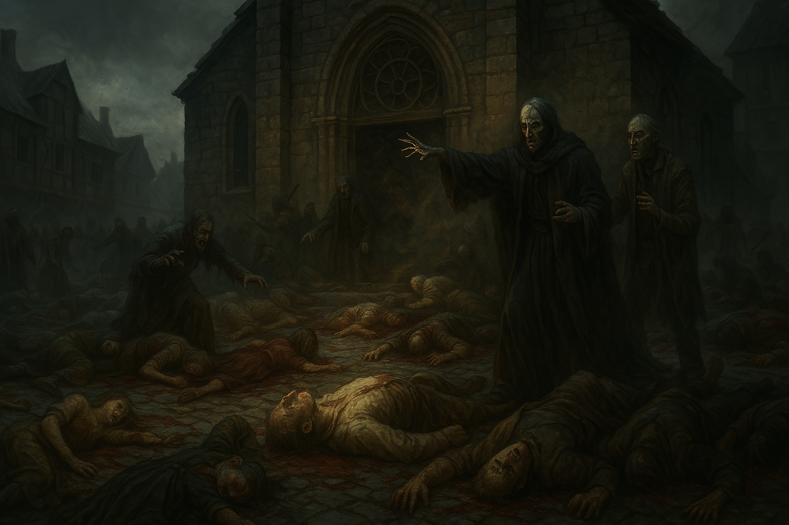

Chapter 7: Demons of Vowalon
Curse of Vowalon


Curse of Vowalon
15048.07.23
早晨六點的沃瓦倫，台北市議員們紛紛從前一晚不安的睡夢中甦醒。幾位冒險者起身，繞了繞他們這幾日逐漸熟悉的沃瓦倫。
早晨八點，眾人們集合在勞迪俱樂部享用早餐，大家都點了勞迪豪華早餐。準備離開俱樂部時，門被重重的甩開。艾菲驚慌地衝了進來，口中念念有詞，對於九點將要舉行的儀式感到非常不安。冒險者們試圖詢問，卻問不出什麼有用的資訊。
經過布魯斯的請託，台北市議員將艾菲護送至儀式會場。途中，烏柯慎重地向艾菲請教，艾菲也在大家面前第一次冷靜而嚴肅的說話。他告訴冒險者們，他們已經踏入了一個無法回頭的命運，而他也相信，他再也見不到明天的太陽了。語畢，艾菲獨自走向了儀式會場。
寂靜殿前的廣場，鎮民們早已聚集了起來，台北市議員花了好些功夫才擠出了空間。米多莉想了想，再次擠了出去，在沒有人發現的情況下，偷偷繞到了教堂正後方，試圖尋找關於前一晚發現的神秘縫隙的線索，卻沒有收穫。
儀式開始前，寇頓神父和台北市議員提起了作晚皈依拉索斯的Tai Tai我還要，今天一大早已經被他派遣出去執行任務了，所以不會出現在現場，請他們放心。儀式開始前，神父和葛蘭倫大法師兩人站在講台上，簡單給予了鎮民們一個關於「沃瓦倫的詛咒」近期事件的整理，並感謝台北市議員們成功將葛蘭倫大法師帶了回來，並稱呼他們為「沃瓦倫的英雄」。接著寇頓神父請鎮民們閉上雙眼，並附和著他的禱詞。
隨著祝禱的過程，葛蘭倫大法師也在一旁作法。然而，當禱詞結束後，冒險者們突然發現周圍什麼聲音都沒有了，睜開雙眼，也一切都看不見。教堂後的米多莉，則試圖生火，想燒看看能不能把教堂後的縫隙燒開來。
在黑暗與寂靜中，冒險者們不敢妄動，卻接二連三地被攻擊。直到龍恩踏出了黑暗與寂靜，才發現周圍滿是鎮民的屍體，而且有數位他們所熟悉的鎮民成為了殭屍，正無情地向他們攻擊，始作俑者，便是此時在他們前方的寇頓神父與葛蘭倫大法師。冒險者們在攻擊殭屍的同時，龍恩與後來也踏了出來，化身為冰原狼的烏柯，衝向了葛蘭倫。隨著寇頓神父與葛蘭倫的死去，黑暗與寂靜就此消逝，圍繞在他們身邊的，是化為殭屍的勞迪俱樂部的布魯斯與班尼、鎮長戴洛、夜夢者的克萊門汀，以及道金的店的格拉罕。台北市議員們忍痛將這些他們所熟悉的善良的鎮民們真正的殺死，也在心中默念著，願他們安息，而鎮民們也在真正逝去的那一刻，向冒險者們在內心中道別。
沃瓦倫鎮唯一生還的，只剩下台北市議員了。虛弱的薩梅爾從眼角看見一道黑影推開了寂靜殿的大門，告訴了夥伴們。此時化為獵狗的烏柯扛起倒地的薩梅爾以及YHWH，與夥伴們一同衝進了寂靜殿，看見了已經被打開的神父辦公室。而那道他們曾試圖打開的掩藏在神父辦公桌後的門，已大大的敞開。小心翼翼的，冒險者們踏入了暗門，並點燃了火柴。裡面有一座木製電梯。通往神父辦公室的門重重關上，台北市議員無處可逃，只能選擇踏入電梯內。
電梯搖搖晃晃，逐漸下沉。遁入了一片黑暗，只有手上火把透出了微微的火光，照在冒險者的臉上。
15048.07.23
Six in the morning, Vowalon. The Tapipei City Council woke up from their horrifying nightmares one by one. Some of them got off their bed, took a walk around the town of Vowalon, where they'd been more familiar than ever.
Eight in the moring, the group gathered at Rowdy's Club for breakfast, and all of them had their deluxe set. When they were prepared to leave the taverm the door was slammed opened hard. Alfie ran in, panickily, muttering. He had a very bad feeling about the ritual that would be held in nine. However, the adventurers couldn't ask out anything in detail.
With Bruce asking, the Taipei City Councilor escorted Alfie to the ritual. On their way, Uko asked Alfie with a cautious attitude. This was the first time Alfie showed his calm and serious side in front of the advnturers. He told the adventurers that they'd stepped into a fate of no return, and he believed that he would never see the next sunrise ever. After that, he walked towards the ritual by himself.
At the plaza in front of the temple, the townfolks had already gathered, and the Taipei City Council took some time to squeeze out space. Midori decided to squeeze out, and sneaked to the back side of the church. She tried to look for any clue to the mysterious gap that she found last night, but found nothing.
Before the ritual, Father Kaulton told the Taipei City Council that Tai Tai Wo Hai Yao, who joined the Laxthos last night, had been sent out for mission this morning, so he wouldn't be here at the ritual. Before the ritual, the Father and the archmage stepped onto the podium, giving a brief summary on the recent incidents of "the Curse of Vowalon", and thanked the Taipei City Council for brining Grenland the Archmage back to Vowalon, naming them "the Heroes of Vowalon". Then, Father Kaulton asked the townfols to close their eyes, and repeat his prayers.
In the process of the ritual, Grenland the Archmage also casted some spells. However, after the prayers, the adventurers found that there was nothing around them. No sound, no light. Nothing. Midori, who was behind the temple, tried to start a fire, to see if she can burn the gap behind the church.
In darkness and silence, the adventurers dared not to act rashly, but was attacked seperately. Not until Ron stepped out of darkness and silence, he found that there were bodies of the villagers, some of the townfolks even turned into zombies, attacking then relentlessly. The ones behind all this, was Father Kaulton and Grenland the Archmage, who are now in front of them. As the adventurers attack the zombies, Ron, and Uko, who stepped out of darkness and silence as a dire wolf, ran to Grenland. The darkness and silence faded as Grenland and Father Kaulton died. All that was left around them was the zombified Bruce from Rowdy's Club, Benny, Mayor Daryl, Clementine from the Night Dreamers, and Graham from Dawkin's Shop. The party killed the familiar kind faces of Vowalon in tears, praying for their peace, while the townfolks said goodbye in the adventurer's mind as they got killed.
The only survivors in Vowalon, were the Taipei City Council. The weak Samael glanced a shadow pushing open the door of the Temple of Silencio, and told the party. Uko, who was now a hound, carried Samael and YHWH on his back, rushed in the temple with the party. They saw the door to the Father's office opened, and also the door behind the table in the office, which they tried to open but failed. The adventurers stepped into the hidden door carefully, and lit up a match. There was a wooden elevator. The door to the Father's office was shut heavily. There was nowhere for the Taipei City Council to hide, but step into the elevator.
The elevator swayed and shook, descending into darkness. Only the light from the torches shone on their faces.